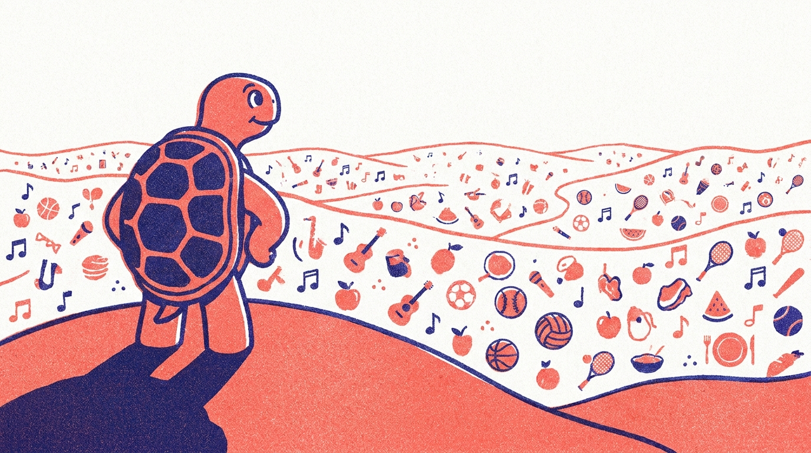
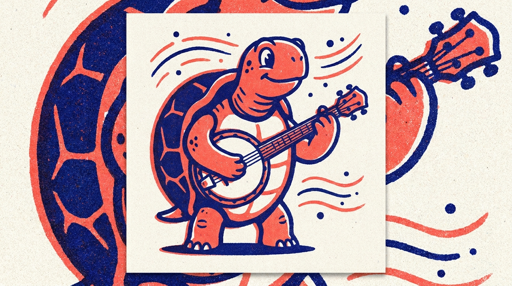
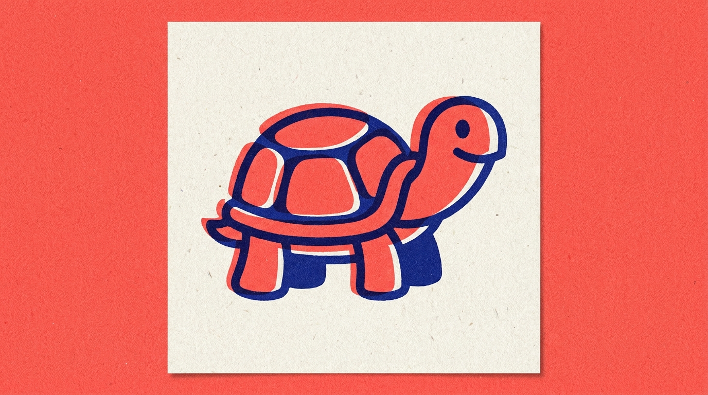
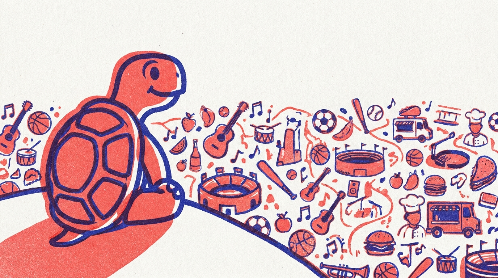
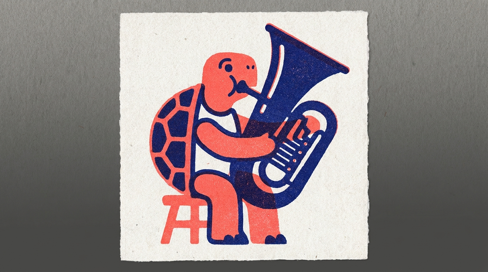

01 / SPOR
Spor
Bu aralar en çok zaman ayırdığım uğraş: düzenli antrenman yapmak, hareket halinde kalmak ve her gün bir adım ileri gitmek.
Sporla enerjisini tazeleyen; araba, yemek ve iyi filmlerle dolu dünyasını paylaşan kişisel sayfam.


Bu aralar günümün büyük kısmını spora ayırıyor, düzenli antrenmanlarla kendimi sürekli geliştirmeye odaklanıyorum. Sporun yanı sıra otomobillerin dünyasını yakından takip etmek ve farklı lezzetler keşfetmek bana her zaman büyük keyif veriyor. Günün yorgunluğunu atmak istediğimde ise iyi bir film açıp sinemanın atmosferinde kaybolmayı çok seviyorum.

Bu aralar en çok zaman ayırdığım uğraş: düzenli antrenman yapmak, hareket halinde kalmak ve her gün bir adım ileri gitmek.

Tasarım çizgileri, motor karakteri ve sürüş dinamikleriyle otomobil kültürünü ve yeni modelleri yakından takip ediyorum.

Farklı mutfaklardan yeni tatlar denemek, iyi hazırlanmış yemekleri keşfetmek ve güzel bir sofrada buluşmak en sevdiğim keyiflerden.
Spor, arabalar, yemek ya da güzel bir film önerisi üzerine konuşmak istersen bana e-posta üzerinden ulaşabilirsin.